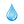
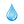
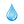

{{plant.name}}
Log new water date:
Notes:
{{plant.notes}}
Get More Info

Log new water date:
Notes:
{{plant.notes}}
Get More Info
Potential Pests: {{popoverPlant.pests}}
Potential Diseases: {{popoverPlant.diseases}}
Harvesting Considerations: {{popoverPlant.harvesting}}
Watering Considerations: {{popoverPlant.water_req}}
Plant Date Considerations: {{popoverPlant.plant_date}}
Planting Location: {{popoverPlant.sun_req}}
Growing From Seed: {{popoverPlant.growing_from_seed}}